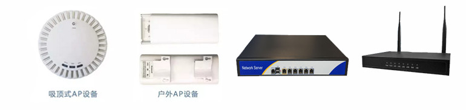
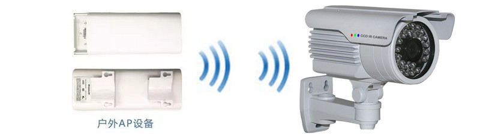
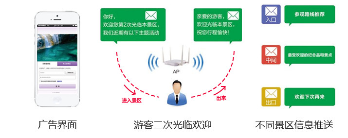
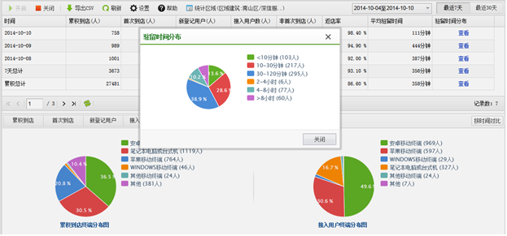
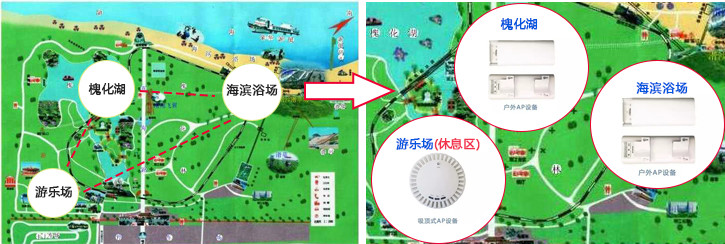

旅游景区 无线解决方案
为景区的广告展示推广、游客景区导航、安全监控无线传输等服务提供专业无线网络解决方案
一、旅游景区 无线网络覆盖需求背景与挑战
“你好，麻烦帮我们拍张合影吧，谢谢！……”如今，游客在景区游玩时，都实时地想把自己身边的美景分享到自己的微信朋友圈、微博、QQ等网络空间，但多数景区都没有无线Wi-Fi覆盖，或者依靠运营商的网络，信号差，上网慢，无法解决游客上传大量照片时耗费巨大流量的顾虑，无法带给游客畅快的“网络旅游”体验。
越来越多的旅游景区在无线网络的部署和运营中遇到困难：
- 景区面积大，区域客流量分布不均匀，信号盲区多；
- 节假日客流多，热门景点游客多，网络覆盖密度不够、稳定性差；
- 无线监控部署困难，网络设备室外分布多，安全性要求高，人员维护能力差;
- 景区景点宣传营销能力差，优惠活动发布推广能力差，游客旅游信息分析能力弱；
二、魔翎无线 旅游景区无线网络解决方案
魔翎无线，作为国内应用层无线领导品牌，拥有专业的旅游景区无线网络解决方案，产品分类室内室外多样可选，信号覆盖范围广，支持创新的微信认证等多种认证方式，便于游客网络接入和景区景点营销宣传。
（一）产品多样，适合景区复杂部署环境
产品分室内室外类型，可灵活部署，满足景区需求场景；
安全防雷、专业工堪覆盖，为景区无线监控设备搭建无线安全数据桥梁； 室外AP配套专业防雷器，产品设计防雷防水防尘防腐蚀，保障设备本身安全，同时为景区的无线监控等设备提供 无线传输通道，实时保障景区安全管理； 
（二）微信认证，让景区微信粉丝直线上升，微信互动，让景区宣传“以一传百”
作为当下最受年轻人欢迎的即时通信软件，微信正成为越来越多企业、商家的营销平台。景区可通过微信认 证实现游客的景区上网，在获得游客关注后，定向进行微信营销活动，让游客成为景区的宣传导游。
微信认证上网过程简易，轻松点击便可实现：
（三）景区消息推送“因地制宜”，二次问候提升游客温馨感受，实现景区广告增值营销
当游客接入景区信锐技术无线Wi-Fi系统时，不同位置景区的终端会收到不同的预定义好的景点促销广告或景 区网站首页Portal界面，并且可以识别二次接入的终端，推送例如“亲爱的游客，欢迎您第二次光临景区，我们近 期有如下主题活动”等信息，实现细致化的定向营销，提升景区营业能力；
（四）游客流量分析统计，景区热度数据呈现，单套设备一站式方案，助力景区营业管理和决策
支持新老游客数量、游客平均驻留时间、景点整体受欢迎程度等信息统计；
单套设备多种功能，节约投资，支持游客密度分析，助力景区合理规划建设和商机挖掘； 
魔翎无线系统，针对景区实际情况进行专业方案部署。实现与景区相关联的游客安全温馨提示、热点景区介绍 等业务，全面提升景区品质。
魔翎无线，旅游景区无线系统，结合景区实际环境部署，不仅可以带给景区游客更好的游玩体验，更可以助力 景区实现宣传营销，带给景区更好的发展。
魔翎无线，旅游景区无线解决方案，专业为您服务！